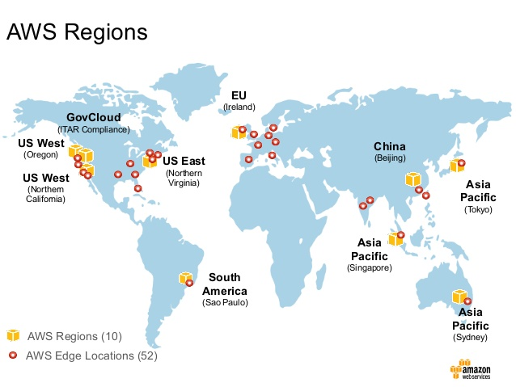
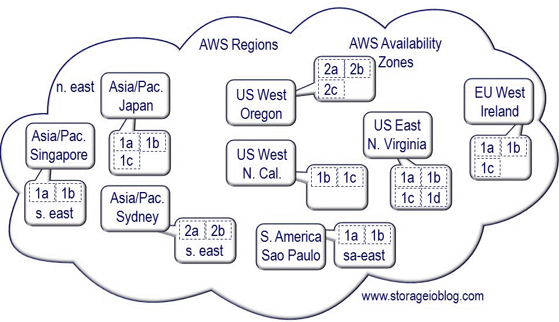
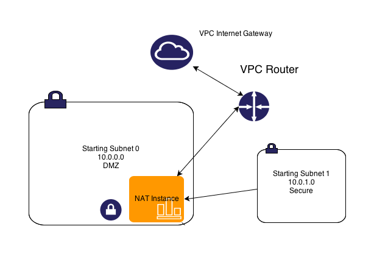
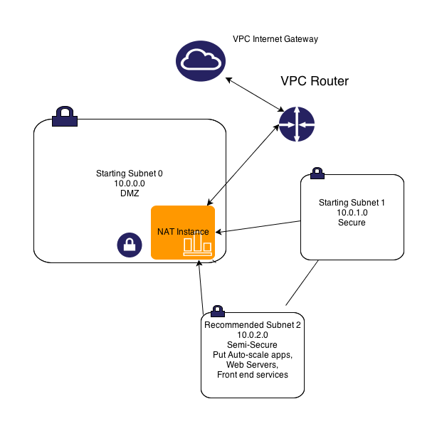
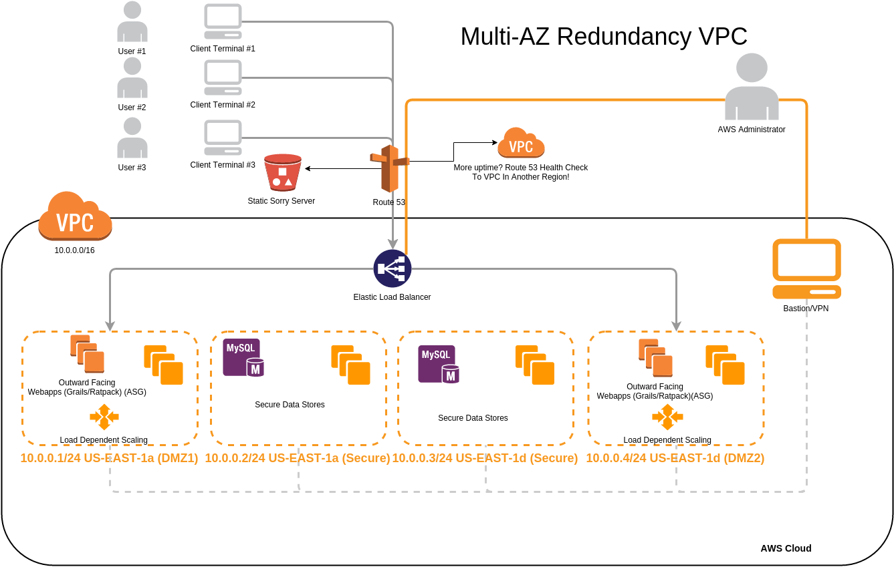
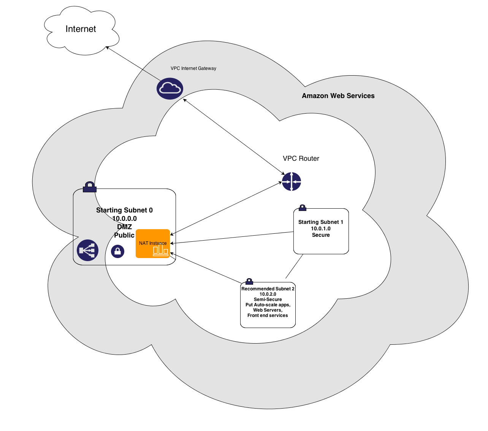
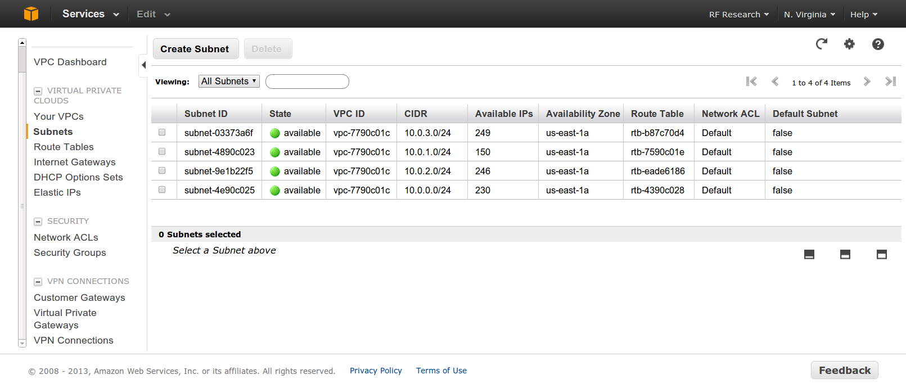
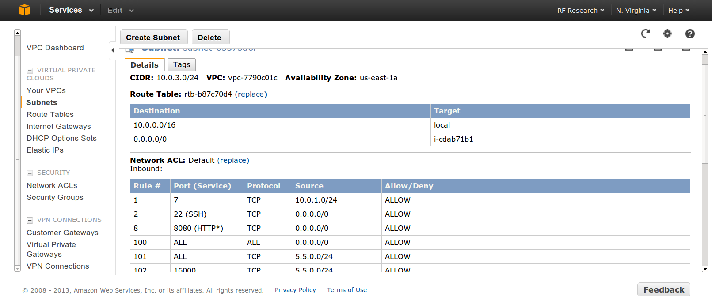
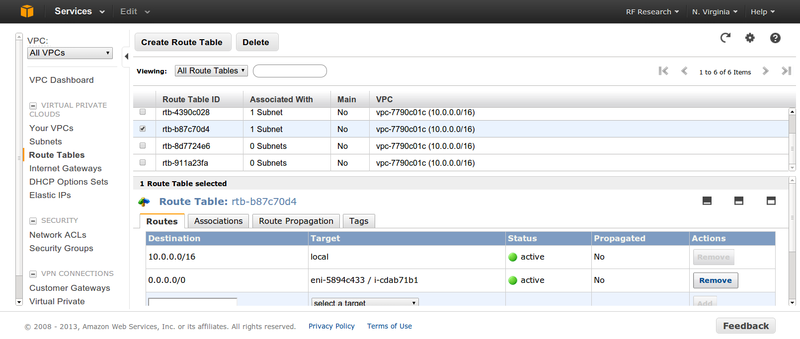
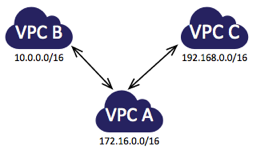

Deploying, Scaling, and Running Grails on AWS and VPC
Learn the ropes of VPC networking and working with Grails and AWS
Created by Ryan Vanderwerf / @RyanVanderwerf
About Me
- Software Engineer on Grails team at OCI (Home to Grails)
- Father of 2 kiddos under 13
- Co-Chair Austin Groovy and Grails User Group
- Co-Author of Effective Gradle Implementation Video Series on Packt
- I like to modify all the things (cars, home automation, phones, gadgets)
- Into lots of Devops/Linux stuff, AWS, and Conversational AI
- OCI - If you need Grails or Groovy support we can help!
What We Will Cover
- VPC Network Basics
- S3 Storage Service
- Grails 3 AWS Plugins
- Gradle AWS Plugins
- sshoogr
- Elastic Load Balancers
- Others misc tips
VPC - Virtual Private Cloud
- Proper Architecture
- Routing
- NAT
- ACL Firewall
- Suggested Subnets
- Security Groups
- DHCP Tips
- VPC Flow Logs
- S3 Endpoints
- VPC Peering
- ClassicLink
- Others misc tips
VPC Terms
- Region - Geographic region that consists a group of availability zones
- Availability Zone - Collection of data centers with 50-100 miles of each other (AZ)
- Multi-AZ - Ability to spread application across availability zones
- Subnet - group of IP address that are addressed as a block
- CIDR Block - a higher level block of many addresses and subnets
AWS Services
- Route53 - Amazon's DNS Service
- EC2 Amazon's Compute Service
- S3 - Amazon's Simple Storage Service (Object Storage)
- EBS - Elastic Block Storage (Like Network Attached Hard Disk)
- Lambda - Amazon's Serverless App System
- ELB - Elastic Load Balancer (1st generation)
VPC - Regions
VPC - Availability Zones
VPC Overview
- Now required on new AWS accounts
- Very different that EC2 'Classic' which has no private network layer
- Costs nothing extra - you have nothing to lose
VPC - Routing/Subnets
VPC - Routing/Subnets
VPC - Routing/Subnets
adding a 3rd subnet - this gives a helping hand
- auto-scaling instances can access internet through NAT
- Web Servers, Web facing apps can live behind ELB yet be able to run OS updates
- S3 Buckets accessible
- Can access your secure subnet as well
VPC - Routing/Subnets - Redundancy
VPC - Routing/Subnets - Redundancy
Now you can add subnets each on a different AZ - You can be 3 9's!
- Create 4 subnets - 2 DMZ's across 2 AZ & 2 secure subnets across AZs too!
- Web Servers, Web facing apps can live behind ELB yet be able to run OS updates
- S3 Buckets accessible
- Can access your secure subnet as well
- Use Route53 Health Checks to failover to backup Region or S3 Static site
- Also can use VPC Peering (Doesn't work across regions though!)
VPC - Routing/Subnets
VPC - Routing/Subnets
VPC - Routing/Subnets
VPC - Routing/Subnets
VPC - Routing/Subnets
Security ACLs
- ACLs like a full firewall - unlike groups
- Protect subnets instead of EC2 instances
- Processed in order of rule #
- ACLs are stateless - responses to inbound bound by outbound rules
- To accommodate various clients and OSs open ephemeral ports 1024-65535 then block malicous ports
VPC - Routing/Subnets
Security Groups
- VPC Security Groups are different than EC2 Groups - use different and descriptive names if both used
- You can use a security group ID (starting with sgXXXXX) in most places where IPs can be entered
- Processed in order of rule #
- ACLs are stateless - responses to inbound bound by outbound rules
- To accommodate various clients and OSs open ephemeral ports 1024-65535 then block malicous ports
VPC - Routing/Subnets
DHCP Options
- Determine What DNS DHCP clients use
- Can do things like set default domain, whether to use internal or external DNS for your VPC
- From Web UI, assign only 1 option set at a time
- Using amazon provided DNS, using naming scheme of 10.0.1.x, default domain ec2.internal
- Can assign your own DNS server names, or even Netbios name servers or NTP servers
- Options are semicolor delimited name value pairs, i.e. 'domain-name=something.com; domain-name-severs=AmazonProvidedDNSs
VPC - Flow Logs
Flow Logs - monitor your traffic!
- Log your VPC Traffic into Cloudwatch Logs
- Pay $.50/GiB to injest logs, $0.03/GiB to archive them
- Cannot log Amazon DNS traffic, Windows License Activation, DHCP traffic
- Use tools like Sumologic or ELK stack to ingest
- Can be used for a more complete IDS solution vs simple proxy or host based
- You may need this for security compliance
VPC - Peering
Peering - Link VPCs Together
- Link VPCs together across AZs
- Cannot peer in between regions
- Can link VPCs across accounts
- Must not have overlapping CIDR blocks
- Can be used with Placement groups with some limitations
- Private DNS and Security Groups do not work between peers
VPC - Peering
(From AWS Docs)
VPC - S3 Endpoints
S3 Endpoints - Speed Up S3 Access!
- Easy to add - if you are not doing this you should!
- Works with some AWS servicse like Elastic Beanstalk, Opsworks, etc with limits
- Uses IAM policies to control access
- Now S3 traffic doesn't leave AWS network - huge boost!
VPC - IAM Roles
- Don't use root account anymore. Traditional security page is retired
- Use MFA Authentication device for all IAM users on console - hardware or phone app
- Set up your IAM roles for each user and use designated login url they give you
- Use resource level security with IAM to tier access to instances/resources
VPC - Misc EC2 Tips
- Rebooting a machine from console will keep instance in place and ephemeral storage(OS reboot faster)
- If you issue an 'stop' command you machine will move and lose ephemeral state
VPC - Misc EC2 Tips
- VPN
- Use OpenVPN instead of metered AWS VPN - it runs fine on a tiny instance- save $$
- Use OpenVPN client to leave remote servers connected to VPC - it auto-reconnects
VPC - Misc EC2 Tips - Elastic Load Balancer
- Create internal ELB's inside your vpc for microservices
- There are 2 types: ELB and ALB (Application Load Balancer)
- ALB - point to a target group for an application instead of a server
- Limit 3600s timeout on idle max now
- Cannot use sticky source IP with HTTPS!
- Use Haproxy for anything very advanced, can accommodate many options
VPC - Misc EC2 Tips
- EBS Based Instances are the way to go
- Use EBS backed instances for anything not build for cloud
- If you can build server on the fly with automation then throw away use ephemeral
- EBS backed instances have no swap by default - be sure to specify ephemeral disks on launch, use as swap
- EBS backed instances have no ephemeral disks on by default be sure to use them on launch of instance and AMIs
S3 Storage
- Limitations
- Common tools
- Regions with different functionality
- Glacier
S3 Storage
- This means after write/update it will EVENTUALLY be consistent
- Make your app retry on read fail - it might not be synced yet
- As of 2015 US-East has same consistency as other regions
Limitations - Eventual Consistency
S3 Storage
- Files over 5GB supported, but most tools don't handle properly
- S3 Tools must support mime/multipart
- s3cmd(Linux) / CyberDuck 4(Mac/Win32) / S3 Browser(Win32) / Cloudberry Explorer(PRO Win32) / Bucket Explorer(all)
- File > 5GB files work with these tools, it is EXTREMELY slow
Limitations - large files
S3 Storage
- s3fs - mount as filesystem - but >5GB files broken, beware of consistency!
- Make sure FUSE is in kernel
- s3cmd is best free command line tools
- Bucket Explorer & CloudBerry Backup are good solid windows clients that parallelize multi-part uploads to ease the pain
- s3 Browser is ok free tool
- For s3fs install on Ubuntu: http://zentraal.com/docs/installing-s3fs-on-ubuntu/
Tools
S3 Storage
Grails S3
- Use the AWS Gradle plugin instead of older S3 Grails plugins
- With Grails 3+ based on Gradle, we use Gradle plugins for this now
- S3 Gradle Plugin Demo
General AWS Grails Plugins (3.x)
- Grails AWS Plugin - never finished porting to Grails 3
- AWS SDK Plugin
- Karman Plugin - Cloud File Karman library plugin
General AWS Grails Plugins - Karman Plugin
- Standardized interface for storing / retrieving files in the cloud
- Supports AWS, OpenStack, Rackspace, and Azure
- Source at https://github.com/bertramdev/karman-core
- http://bertramdev.github.io/karman/guide/
- Uses LocalStorage provider by default
General AWS Grails Plugins - Karman Plugin
provider = StorageProvider.create(
provider: 's3',
accessKey: ACCESS_KEY,
secretKey: SECRET_KEY,
//optional
region: 'eu-west-1',
protocol: 'https',
useGzip: false,
keepAlive: false,
maxConnections: 50
)
//example getting file contents
def file = provider['mybucket']['example.txt']
return file.text
General AWS Grails Plugins - AWS SDK Plugin
- Wrapper for AWS Java SDK
- This is the one to use for most powerful work of services - can access select AWS services
- Uses AWS Web Service API wrapped in a Java Library
- If a service you want isn't supported by the plugin you can use Java lib directly
- Recently pared down to more limited services with more value
- Works with Grails 3!
General AWS Grails Plugins - AWS SDK Plugin
Services Supported
- DynamoDB
- S3
- Kinesis
- SES (Simple Email Service)
- SNS (Simple Notification Service)
- SQS
General AWS Grails Plugins - AWS SDK Plugin
DynamoDB
- Uses data modeling based on DynamoDBMapper
- There is no current GORM for DynamoDB so this is the best bet
- Use annotations like @DynamoDBTable on bean to define table
- Use @DynamoDBAttribute on attributes to define attibutes for table
- Docs/Examples at: https://github.com/agorapulse/grails-aws-sdk/tree/master/grails-aws-sdk-dynamodb
General AWS Grails Plugins - AWS SDK Plugin
DynamoDB
- Demo
General AWS Grails Plugins - AWS SDK Plugin
S3
- AmazonS3Service - manage buckets, upload/download and delete files
- Extend AmazonS3Service on each bucket for operations per bucket
- Declare static final BUCKET_NAME on extended service to set bucket
- Docs here: https://github.com/agorapulse/grails-aws-sdk/tree/master/grails-aws-sdk-s3
General AWS Grails Plugins - AWS SDK Plugin
S3 - Demo
General AWS Grails Plugins - AWS SDK Plugin
Kinesis
- Kinesis is a message broker for distributed logs similar to Kafka
- Good comparison between the two: http://www.dani-sola.com/kafka-vs-kinesis/
- AmazonKinesisService is the main artefact
- Includes four abstract utility classes to consume streams
- If you want tight integration with Lambda this is helpful
General AWS Grails Plugins - AWS SDK Plugin
SES (Simple Email Service)
- Allows sending email via plain text or via GSP templates
- Provides artefacts AmazonSESService and AmazonSESTemplateService
- Also supports certain types of attachments (Unsupported types at http://docs.aws.amazon.com/ses/latest/DeveloperGuide/mime-types.html
- Doesn't handle any SES management (use the AWS console) - just sending
General AWS Grails Plugins - AWS SDK Plugin
SQS (Simple Queue Service)
- Provides Artefact AmazonSQSService
- Can manage queues
- Can send, receive and delete messages
- A typical use would be a Quartz job to poll for messages
- Messages can remain in queue for 12 hours
General AWS Grails Plugins - AWS SDK Plugin
SNS (Simple Notification Service)
- Provides Artefact AmazonSNSService
- Allows notifications between apps, valuable for Lambda
- Supports registering and pushing to mobile
- Can send, receive and delete messages
- Also manages topics (create/delete/publish)
- Sub/Unsub to topics (also via SMS!)
General AWS Gradle Plugins
With Grails 3 being based on Boot and Gradle, many old plugins became obsolete. We now use Gradle plugins to manage these things.
- Gradle CDN Asset Pipeline plugin - push assets to CDNs
- Gradle AWS Plugin - group of plugins does most things AWS
- Gradle Beanstalk Plugin - plugin to deploy WARs
General AWS Gradle Plugins - CDN Asset Pipeline plugin
CDN Asset Pipeline plugin
- Automatically upload asset-pipeline static assets to a CDN
- Docs/Source at https://github.com/agorapulse/gradle-asset-pipeline-cdn
- Only supports S3 storage services
General AWS Gradle Plugins - AWS Gradle Plugin
AWS Gradle Plugin
- Source at https://github.com/classmethod/gradle-aws-plugin
- Works great for tasks like publishing Lambda skills (see Alexa talk)
- Great for automation tasks related to AWS
- Lazybones template for AWS Skills: https://github.com/rvanderwerf/alexa-groovy-lazybones
General AWS Gradle Plugins - Beanstalk Plugin
Beanstalk Gradle Plugin
- Source at https://github.com/EvidentSolutions/gradle-beanstalk-plugin
- Deploys WAR file to Elastic Beanstalk
- Great for Grails Apps too!
- @benorama's Great example guide at https://goo.gl/x163Fv
sshoogr
- sshoogr - Groovy-based DSL library for working with remote servers through SSH - DSL Allows:
- connecting
- executing remote commands
- copying files and directories
- creating tunnels in a simple and concise way
- works as a gradle plugin
- sshoogr+gradle+DSL == Groovy Based Ansible???
- Repos at https://github.com/aestasit/sshoogr
Useful resources
- Gradle beanstalk plugin https://github.com/EvidentSolutions/gradle-beanstalk-plugin
- Old but useful Elastic Beanstalk Intro @ Bobby Warner's Blog: http://goo.gl/PQaAxx
- Grails AWS SDK Plugin https://github.com/agorapulse/grails-aws-sdk/
- Grails AWS Plugin https://github.com/grails-aws/grails-aws
- Gradle AWS Plugin https://github.com/classmethod/gradle-aws-plugin
- sshoogr Gradle plugin https://github.com/aestasit/sshoogr
Useful resources
- Another Beanstalk: http://goo.gl/0SeYyS
- Oracle, EBS, and other Tips from AWS Architect Tom Laszewski http://cloudconclave.blogspot.com/
- Building an S3 Browser in Grails http://goo.gl/u6lRYB
- VPC Deep Dive Slides http://goo.gl/o4g8yj
- Deploying Grails 3 and CDN on Elastic Beanstalk https://goo.gl/x163Fv
- AWS Global Interactive Map https://goo.gl/qpHR09
THE END - Thank You!
I hope you have enjoyed the session!
Free free to contact me on twitter @RyanVanderwerf or email rvanderwerf@gmail.com